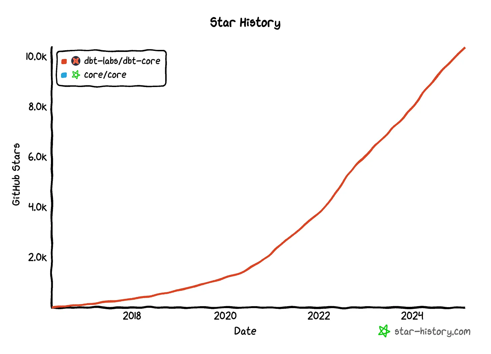
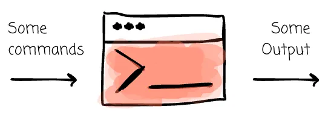
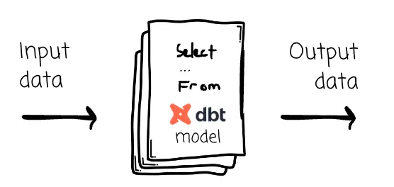
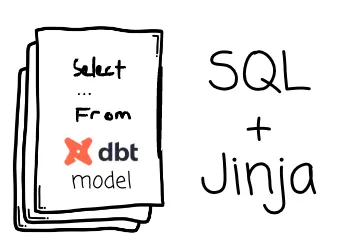
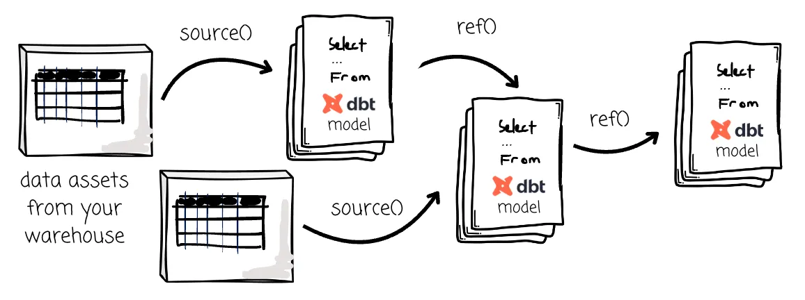

In 2021, my company reorganized the data team. The data engineering team got a new leader, and after the initial greetings he announced: “I’m bringing dbt into our stack. Do you know dbt? It’s popular right now.”
I shook my head. Most of my teammates did, too. Despite our attentive expressions, my first thought was: here we go again — another leader introducing a trendy tool to prove a point.
Fast forward four years, and dbt has proven it’s far more than just hype. If you work in data, you’ve probably heard of it at least once, or you may even have used it yourself. The rest of this lesson is what I wish someone had told me on day one of that reorg.
dbt (data build tool) is a CLI tool that lets you efficiently transform data with SQL — organized as a directed acyclic graph (DAG) of models, with built-in testing, documentation, and lineage.
That’s it.
It’s not an engine like Spark. It’s not a database like Postgres or Snowflake. It’s a tool that helps you manage your SQL data transformation. You write SELECT statements, dbt handles the rest: dependency resolution, the CREATE TABLE / CREATE VIEW wrapping, running models in the right order, generating docs, running tests, and producing artifacts you can audit.
A dbt “model” is just a .sql file containing a SELECT statement. You don’t write CREATE TABLE or INSERT INTO — dbt does that for you based on the model’s configuration.
-- models/staging/stg__customers.sql
select
id as customer_id,
first_name,
last_name
from {{ ref('raw_customers') }}
Models give us a tangible form of the SQL transformation logic. Each model defines a transformation that turns one shape of data into another, inside your data warehouse. When dbt runs, it executes these queries and materializes the transformed data as a table or view.

Under the hood dbt has two jobs: a compiler and a runner. We write dbt models and run a few commands in the terminal. dbt compiles all the model code into raw SQL statements, and then executes them on the data warehouse — Snowflake, BigQuery, Databricks, DuckDB — or an engine like Spark or Trino.

dbt doesn’t load your data and it doesn’t even know your data’s content (except for the schema and some metadata). Everything stays inside your warehouse. dbt is the conductor; the warehouse is the orchestra.

A model’s code is not solely SQL — it’s SQL combined with Jinja. Jinja is what gives dbt its two superpowers: source() and ref().

{{ source('jaffle_shop', 'raw_customers') }} — points at a physical table in the warehouse that dbt didn’t create (raw data loaded by some upstream tool like Fivetran).{{ ref('stg__customers') }} — points at another dbt model in this project. dbt resolves it to the right table name at compile time and uses it to build the DAG.Together, these form a complete data transformation lineage: the leftmost models point at physical tables via source(), and every model after that uses ref() to chain onto a previous model.

Each node is a model, each arrow is a ref(). dbt walks this graph at run time to build models in the right order — you never write a CREATE TABLE manually, and you never schedule the dependencies yourself.
dbt also lets you write modular and reusable model structures, which lets teams break transformations into smaller, maintainable components. Before the production run, you can test your dbt models to ensure they produce the expected results. It also auto-generates documentation, giving a clear overview of your transformations and lineage. And because a dbt project is purely code, it’s naturally compatible with Git — track changes, collaborate via pull requests, roll back, run CI/CD, just like software engineers do with application code.
| Capability | Without dbt | With dbt |
|---|---|---|
| Dependencies | You manage execution order by hand or with Airflow tasks | Inferred automatically from ref() calls; dbt builds the DAG |
| Tests | Hand-written queries scheduled separately | Declare not_null, unique, relationships in YAML; dbt generates and runs them |
| Docs | A wiki page that goes stale | Auto-generated from your YAML and code, including column-level lineage |
| Reuse | Copy-paste SQL between scripts | Macros (Jinja-templated SQL) and packages |
| Environments | Manually point queries at dev / prod schemas |
One profiles.yml with multiple targets |
| Version control | SQL lives in a wiki or in BI-tool definitions | SQL lives in git, gets PRs, gets CI |

| Stage | Tools | Examples |
|---|---|---|
| Sources | Operational systems & data | Salesforce, Stripe, Postgres, Kafka, S3 buckets |
| E + L | Ingestion / loaders | Fivetran, Airbyte, custom Python jobs |
| Warehouse + T | Storage + dbt for transformation | Snowflake / BigQuery / Databricks / DuckDB — dbt is the T layer running inside |
| BI / ML | Downstream consumers | Looker, Tableau, Mode, Hex, Jupyter, ML models |
Notice dbt has only one job. It does not move data into the warehouse and it does not visualize the output. It transforms what’s already in the warehouse.
A dbt project is mostly four kinds of files:
.sql models — the transformations themselves..yml configs — sources, tests, docs, exposures..csv seeds — small static data (lookup tables, country codes) loaded with dbt seed..sql macros — reusable Jinja-templated SQL snippets.That’s the entire surface area. The rest is just running dbt run, dbt test, and dbt build.
A quick adoption-curve check before we move on:
McDonald’s, Nasdaq, Discord, Shopify, and many others ship analytics on top of it. So why did it stick? Borrowing the Unified Theory of Acceptance and Use of Technology (UTAUT) lens:
pip install and you’re running.The other half of the story is the rise of cloud data warehouses — pay-as-you-go pricing, cheap storage, columnar processing as the standard — which is what made transforming-in-the-warehouse cheaper than maintaining a separate Spark or ETL tier in the first place. We covered that in the previous lesson.
A few things that took me a while to internalize when I first picked dbt up:
One more lesson before we start writing real dbt — press n.